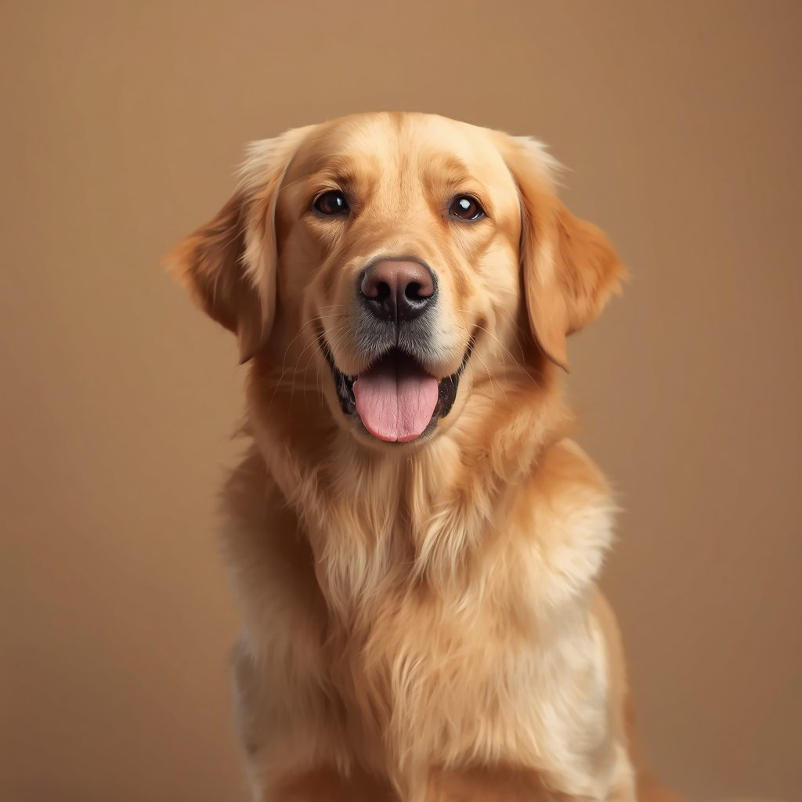
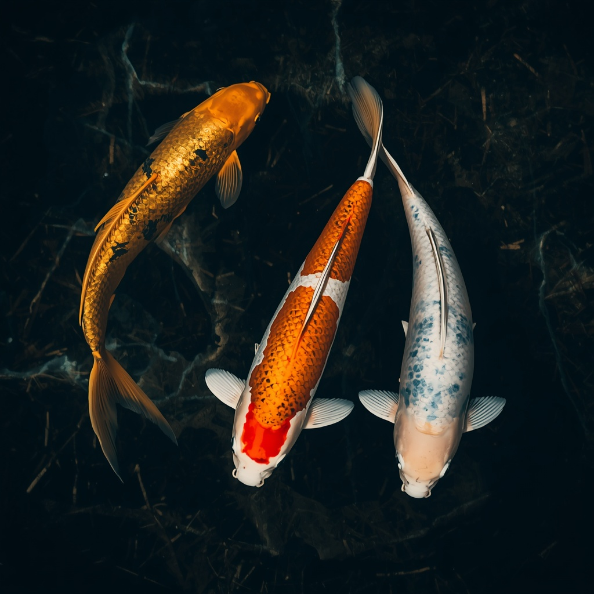
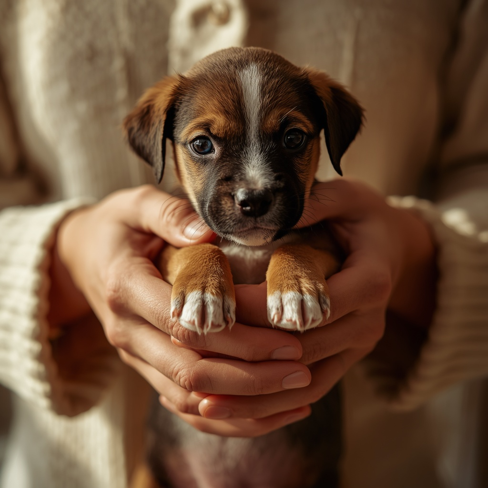

Come leggere un pedigree: guida per principianti
Il pedigree non è solo un pezzo di carta. Impara a interpretare ogni voce, dalla discendenza ai titoli.
Leggi →
Perché la distanza geografica conta nell'accoppiamento selettivo
La distanza ha ragioni pratiche e genetiche concrete nell'accoppiamento selettivo.
Leggi →
ENCI, ANFI, UNIRE: quali enti riconoscono il tuo animale?
Una panoramica degli enti italiani che gestiscono i libri genealogici per cani, gatti, cavalli e molto altro.
Leggi →
Come preparare il profilo perfetto su Lineagree
Angolazioni, luce, documenti e descrizione: ecco come presentare il tuo animale al meglio.
Leggi →
Carpe Koi: il pedigree dell'acqua
Con oltre 70 varietà riconosciute e secoli di selezione, le Koi meritano un posto tra le razze più nobili.
Leggi →
Allevamento selettivo responsabile: cosa significa davvero
Preservare una razza significa fare scelte difficili per garantire salute e longevità alle generazioni future.
Leggi →